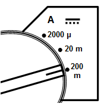
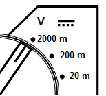
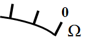
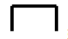
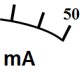

1. В каких единицах измеряется напряжение?
2. Какую величину измеряет мультиметр, если переключатель находится в положении указанном на рисунке?

3. Каким должно быть входное сопротивление амперметра по сравнению с сопротивлением участка цепи, на котором измеряется сила тока?
4. Какую величину можно измерить мультиметром, если переключатель находится в положении указанном на рисунке?

5. Какую информации дает данное условное обозначение на шкале электроизмерительного прибора?

6. Какую информации дает данное условное обозначение на шкале электроизмерительного прибора?

7. Каким должно быть входное сопротивление вольтметра по сравнению с сопротивлением участка цепи, на котором измеряется напряжение?
8. Какую информации дает данные условные обозначения на шкале электроизмерительного прибора?

9. В каких единицах измеряется частота переменного тока?
10. Какой измерительный прибор используется для измерения силы тока?
11. Условное обозначение какого измерительного прибора приведено на рисунке?
12. В каких единицах измеряется мощность?